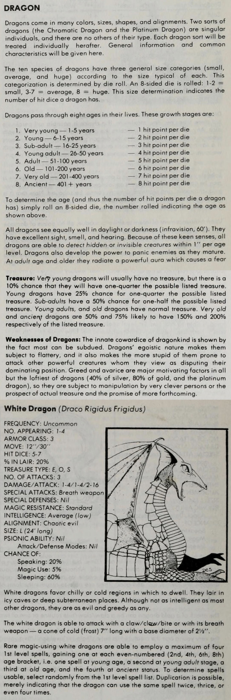

DRAGONS: There are six varieties of Dragons, each with separate characteristics in particular and other things in common. The varieties will be dealt with first:
| Dragon Type | Breath Weapon | Range & Shape | Hit Dice | Talking/Sleeping |
|---|---|---|---|---|
| White | Cold | 8” × 3” cone | 5–7 | 25% / 60% |
| Black | Acid | 6” × 1/2” line | 6–8 | 40% / 50% |
| Green | Chlorine Gas | 5” × 4” cloud | 7–9 | 55% / 40% |
| Blue | Lightning | 10” × 1/2” line | 8–10 | 70% / 30% |
| Red | Fire | 9” × 3” cone | 9–11 | 85% / 20% |
| Golden | Fire or Gas | (as applicable) | 10–12 | 100% / 10% |
Breath Weapons: The Dragon is able to use its breath but three times per day, so sometimes it will bite instead. To determine this simply roll two six-sided dice; a score of six or less indicates the Dragon will bite, but a seven or better indicates it will breathe.
Cone-shaped breath weapons originate from the mouth of the Dragon at 1/2” diameter.
Line-shaped breath weapons will travel in a straight line beginning at the height of the Dragon’s head at the time it releases.
Cloud-shaped breath weapons extend from ground level to a height of 3”.
Hit Dice: The number of dice is an indication of the size of the creature. Most will fall in the middle, but 20% will be small and 20% very large. The value of the hit dice, as well as the value of the breath weapon, will be subject to the maturity of the Dragon.
| Die Roll to Determine | Description/Age | Value of Hit Dice and Breath Weapon |
|---|---|---|
| 1 | Very Young/1–5 years | 1 per die |
| 2 | Young/6–15 years | 2 per die |
| 3 | Sub-Adult/16–25 years | 3 per die |
| 4 | Adult/26–75 years | 4 per die |
| 5 | Old/76–100 years | 5 per die |
| 6 | Very Old/100+ years | 6 per die |
Dragons come in many colors, sizes, shapes, and alignments. Two sorts of dragons (the Chromatic Dragon and the Platinum Dragon) are singular individuals, and there are no others of their type. Each dragon sort will be treated individually hereafter. General information and common characteristics will be given here.
The ten species of dragons have three general size categories (small, average, and huge) according to the size typical of each. This categorization is determined by die roll. An 8-sided die is rolled: 1-2 = small, 3-7 = average, 8 = huge. This size determination indicates the number of hit dice a dragon has.
Dragons pass through eight ages in their lives. These growth stages are:
| 1. Very young — 1-5 years | — 1 hit point per die |
| 2. Young — 6-15 years | — 2 hit point per die |
| 3. Sub-adult — 16-25 years | — 3 hit point per die |
| 4. Young adult — 26-50 years | — 4 hit point per die |
| 5. Adult — 51-100 years | — 5 hit point per die |
| 6. Old — 101-200 years | — 6 hit point per die |
| 7. Very old — 201-400 years | — 7 hit point per die |
| 8. Ancient — 401 + years | — 8 hit point per die |
To determine the age (and thus the number of hit points per die a dragon has) simply roll an 8-sided die, the number rolled indicating the age as shown above.
All dragons see equally well in daylight or darkness (infravision, 60’). They have excellent sight, smell, and hearing. Because of these keen senses, all dragons are able to detect hidden or invisible creatures within 1” per age level. Dragons also develop the power to panic enemies as they mature. At adult age and older they radiate a powerful aura which causes a fear
Treasure: Very young dragons will usually have no treasure, but there is a 10% chance that they will have one-quarter the possible listed treasure. Young dragons have 25% chance for one-quarter the possible listed treasure. Sub-adults have a 50% chance for one-half the possible listed treasure. Young adults, and old dragons have normal treasure. Very old and ancient dragons are 50% and 75% likely to have 150% and 200% respectively of the listed treasure.
Weaknesses of Dragons: The innate cowardice of dragonkind is shown by the fact most can be subdued. Dragons’ egoistic nature makes them subject to flattery, and it also makes the more stupid of them prone to attack other powerful creatures whom they view as disputing their dominating position. Greed and avarice are major motivating factors in all but the loftiest of dragons (40% of silver, 80% of gold, and the platinum dragon), so they are subject to manipulation by very clever persons or the prospect of actual treasure and the promise of more forthcoming.
| FREQUENCY: Uncommon |
| NO. APPEARING: 1-4 |
| ARMOR CLASS: 3 |
| MOVE: 12”/30” |
| HIT DICE: 5-7 |
| % IN LAIR: 20% |
| TREASURE TYPE: E, O, S |
| NO. OF ATTACKS: 3 |
| DAMAGE/ATTACK: 1-4/1-4/2-16 |
| SPECIAL ATTACKS: Breath weapon |
| SPECIAL DEFENSES: Nil |
| MAGIC RESISTANCE: Standard |
| INTELLIGENCE: Average (low) |
| ALIGNMENT: Chaotic evil |
| SIZE: L (24’ long) |
| PSIONIC ABILITY: Nil |
| - Attack/Defense Modes: Nil |
| CHANCE OF: |
| - Speaking: 20% |
| - Magic Use: 5% |
| - Sleeping: 60% |
White dragons favor chilly or cold regions in which to dwell. They lair in icy caves or deep subterranean places. Although not as intelligent as most other dragons, they are as evil and greedy as any.
The white dragon is able to attack with a claw/claw/bite or with its breath weapon — a cone of cold (frost) 7” long with a base diameter of 2½”.
Rare magic-using white dragons are able to employ a maximum of four 1st level spells, gaining one at each even-numbered (2nd, 4th, 6th, 8th) age bracket, i.e. one spell at young age, a second at young adult age, a third at old age, and the fourth at ancient status. To determine spells usable, select randomly from the 1st level spell list. Duplication is possible, merely indicating that the dragon can use the same spell twice, thrice, or even four times.

Whites are the least intelligent species of western dragon, and their behavior shows it. They have very little in the way of either foresight or planning, and their memory is rudimentary and capable of recalling only physical events, not abstract concepts. There’s one exception to this: They remember offenses against them, and they have a very well-developed sense of vengeance.
Unlike other dragon species, whites mate purely for pleasure. If offspring arise from this activity, so be it, but this isn’t the goal of the activity. Should the female become impregnated, the male instinctively stays around to protect her. Once the eggs hatch, however, the two creatures go their separate ways. The hatchling dragons follow one or other of the parents, and the older dragons do not object to the young tagging along. The parents feel no obligation to protect the young, however, and so the offspring must learn to fend for themselves immediately. (The infant mortality rate for white dragons is rather high.)
The time at which young dragons leave their parents and strike out on their own varies wildly. Some leave almost immediately, while others remain for a century. In the latter case, the parent usually drives the offspring away, sensing that it may soon become a rival. (And the parent is sometimes right. There have been cases recorded where a young dragon has killed its parent for the older dragon’s hoard.)
White dragons have been described—by other dragons—as “the thugs of dragonkind” and as being “about as subtle as volcanoes.” Even those lucky whites that can communicate with an intelligent creature rarely have thoughts worth communicating.
As might be expected from their color, whites dwell in frigid lands where snow and ice continually cover the ground. Although whites are sometimes found among the snowcapped peaks of the more southerly mountains, these are usually young—and somewhat unwise—individuals that frequently fall prey to adventuring companies from the civilized lands. The majority of the whites live in far northerly climes, well away from concentrations of humanity.
The less intelligent dragons— blacks and whites—seem to have no taboo against inbreeding, or perhaps no knowledge of its significance. For this reason, blacks and whites often suffer the consequences of inbreeding: numerous infertile eggs and congenital problems (both physical and mental).
As with humans, demihumans, and humanoids, the alignment of dragons reflects not instinctive behavior but an intelligent choice about how the creatures respond to the world. Certainly, dragons raised in a society with a strong alignment are probably going to share that alignment, but there’s no law of nature that prevents a dragon from changing its alignment. (In fact, the consequences of changing alignment are considerably less for a dragon than they are for a human or demihuman. Dragons progress in power depending on their age, so they suffer no direct ill effects from a voluntary alignment change.)
Dragons that voluntarily change their alignments are referred to as “rogues,” and they’re very rare indeed. Rogues have decided for reasons of their own that they don’t go along with the world-view common to dragons of their species.
Rogue chromatic dragons are even rarer than rogue metallic dragons, but they do occur. A young red dragon might be sickened by the suffering that its older relatives are inflicting on innocent victims. After much soul-searching, it might flee to an isolated area where it can live on its own terms (Chaotic Neutral alignment), or it might try to work to prevent or reverse damage caused by others of its kind (Chaotic, Neutral or even Lawful Good, depending on how it went about this task).
In the case of Chaotic Evil dragons becoming neutral or good, their kin respond to them in exactly the same way they would to any other dragon of that alignment: hatred and attack if the rogue intrudes on their territory, general indifference otherwise. Lawful Evil dragons might consider retribution against the rogue, but only if the rogue posed some kind of danger to them or if they saw some potential gain in it.
White dragons are notable exceptions in these matters. These creatures seem to have no concept of population management; they feed until an area is totally cleaned out of prey. When this happens, they’re forced to look elsewhere for food. “Elsewhere” often means another dragon’s territory, which leads to violent battles between the creatures. Lack of food also sometimes causes whites to head south from their frigid homes and feed in more populous areas (often those already inhabited by man).
This insensitivity to the ecosystem and their place in it probably explains why the active and dormant phases for white dragons are both about two decades long. Without the long and frequent hibernation periods, the creatures would deplete their environment to the point where they couldn’t survive.
Some ambitious PCs might come up with the idea of acquiring a freshly-hatched dragon and rearing it as a pet, friend, or guardian. While there’s nothing innately wrong with the idea, there are some potential problems.
When dragons hatch, they have a strong imprinting instinct that seems to be common to almost every creature. In other words, they consider the first creature that they see after emerging from the egg as their parent, and will— initially, at least—consider themselves to be of the same race as that creature. (Human jesters sometimes go to the trouble of incubating ducks’ eggs just so they can be present at the hatching, and have the ducklings imprint on them. From then on, the ducklings follow the jester around as though the human were their mother… much to the amusement of spectators.)
There’s a significant problem here, however. Even the dumbest white dragon is much smarter than a duck. The imprinting instinct is a short-term thing for dragons, intended to help the hatchlings survive the first month or two of life in a hostile world. After that, their innate intelligence takes over.
Dragons mature mentally at about twice the rate of humans, which means they attain their full share of intelligence and wisdom at about ten years of age. (They’re still potentially very naive, of course, since their experience of the world is highly limited.) Long before this point—probably before they reach the age of five—the effect of the imprinting vanishes, and they’ll have realized that they’re quite different from their “parent.” How the relationship progresses from here depends on both the treatment the dragon receives and on the nature of the dragon.
Good dragons appreciate kind, respectful, and humane treatment, and feel some indebtedness to whoever provided that treatment. No matter how good the treatment has been, however, the dragons never feel blind loyalty (it’s an intelligent creature, after all, quite possibly more intelligent than the people rearing it).
The relationship between a well-reared good dragon and its foster parent closely parallels that between a human parent and child. The relationship can be close or distant, warm or stormy, depending on how closely the world-view of the parent matches that of the dragon (with respect to alignment, particularly). A Chaotic brass dragon in a Lawful environment will quickly begin to chafe at the discipline, while a gold in a Chaotic environment will quickly feel the need for a more organized climate.
No matter how closely alignments and outlooks match, however, the dragon eventually feels the need to leave home and make its own way in the world. Again, depending on how close the relationship was during the dragon’s formative years, the on-going relationship between parent and dragon can range from close friendship and mutual respect to complete indifference or even antipathy.
Evil dragons are a completely different story. As soon as the dragon is old enough to recognize its true nature—perhaps five years of age—it starts looking for ways to manipulate the relationship to suit itself. This is true no matter what the alignment of the parent. The dragon quickly starts pushing the limits of any discipline enforced upon it.
Evil dragons don’t respond well to the good and respectful treatment relished by their good kin. Evil chromatics would see this as weakness in their parent, and it would tempt them to take over as soon as possible. These dragons respect strength and power, and won’t attack parents who are obviously much more lethal than they.
This is particularly true for Lawful Evil blues. They will willingly follow and learn from an evil-aligned parent, as long as that parent remains more powerful than they. As soon as they see the balance shift, however, they’ll try to take over. They won’t kill the parent if they can avoid it, but they will expect the parent to accept them as the master from that point forward.
Chaotic Evil chromatics feel no loyalty or indebtedness to anybody. The first time they’re reasonably sure they can manage it, they’ll turn on their parents, kill them, and take everything of value.
The behavior patterns and abilities of unintelligent creatures are mainly instinctive (with some exceptions such as species-specific songs or calls]. This isn’t the case with intelligent creatures, such as humans, demihumans, or dragons. The vast majority of abilities and behaviors must be learned from their parents.
Take the case of a hatchling dragon being reared in a human household. How is that dragon going to learn to fly? Certainly it can watch other winged creatures, but dragon flight is quite different from the flight of a sparrow. It is very unlikely that the poor creature will ever learn how to get off the ground.
Enterprising characters might somehow get the creature to a high spot so it can glide (which is an instinctive behavior) and perhaps teach itself from there the intricacies of true flight. There are problems here, too, however. The dragon has been raised among flightless creatures (presumably), and won’t have developed a dragon’s normal indifference to altitude. The problems involved in getting a young gold dragon that is afraid of heights to step off a cliff could be the center of much enjoyable role-playing.
If the characters can overcome this obstacle, it’s still not clear sailing. The ability to glide is instinctive, but only to a degree. Dragons are intelligent, which implies that their ability to feel fear is as great as—if not more than—that of a human. That first glide is a potentially terrifying experience, and could cause the dragon to panic, with potentially catastrophic results (ask any novice hang-glider). The chance of a successful first glide is 90% (roll 1d100, with a result of 01 to 90 representing success). If the roll exceeds 90, then the dragon has frozen and plummets to the ground. For each point by which the roll exceeds 90, the dragon falls 10% of the total height from which it started the glide. For example, say the dragon attempts its first glide from a 100-foot-high cliff (the minimum altitude from which a glide can start). The DM rolls a 91. This means that the dragon almost makes it, but panics just before landing and falls 10 feet (the effects of falling on dragons are discussed in a later section). If the DM had rolled 00, the poor dragon would have panicked immediately after stepping off the cliff, and would have plummeted the full 100 feet.
After an unsuccessful glide, the dragon—assuming it survived— can try again. The experience of the fall was probably traumatic, however, and a modifier of 1d12 is added to the success die roll for the next attempt (i.e., the DM rolls 1d100 and 1d12, adds the results, and compares them to the success target of 90). Although the maximum possible result is now 112, the dragon can never fall more than 100% of the total height from which the glide started.
Needless to say, it will probably be much harder for the characters to persuade the dragon to step off into space for a second time.
As soon as the dragon has completed one successful glide, it never has to make another die roll. From this point on, it can teach itself to fly. This procedure takes 1d4+3 months. A self-taught dragon can never fly as well as one that was raised by those of its own kind. Its maneuverability class is one step worse (Class D), its maximum speed is 75% of what it should be (round fractions up; e.g., a self-taught brass has a maximum flying speed of 23 rather than 30), and it can never perform a wingover maneuver. In addition, all attacks that the dragon attempts while flying suffer a -2 penalty to the attack roll.
A self-taught dragon might later be able to receive instruction from one of its own kind, but the dragon might already have developed too many ingrained bad habits for the instruction to remove the above restrictions. The chance of the instruction working is 100% minus 10% times the age category of the dragon when it receives the instruction.
For example, say that a brass that taught itself to fly is now juvenile (age category 4). If he now receives flying lessons from another dragon, the chance of success is 60% (100 - (10x4)). The DM rolls 1d100. If the result is 60 or less, the juvenile brass is no longer subject to the restrictions listed above. If the result is 61 or more, the brass’s bad habits are too ingrained for instruction to remove them. No matter how much training the brass receives, he will always be subject to flight restrictions. This kind of instruction takes 1d4 weeks.
Language is also an acquired attribute. Like any other intelligent creature, dragons can acquire a language only from another creature who speaks that language. Thus it is quite possible for a copper dragon never to learn the copper tongue. Dragons raised by humans generally learn only the common tongue, unless their parent is proficient in other languages (and wishes to teach them).
Dragon hatchlings are immediately hungry, and will eat just about anything. They are blind for the first 12-24 hours immediately after hatching.